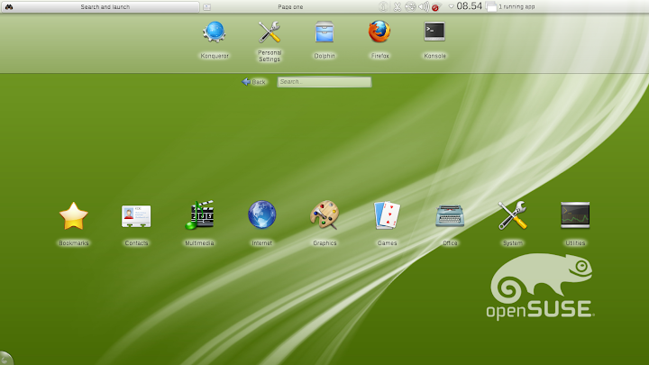

Tenth year of using Linux
Posted on Fri 10 December 2021 in tech
In 2012 I met and installed Linux for the first time. I chose openSUSE 12.1 just because that green chameleon was so cool :))
Yes, it's not logical to choose your OS based on a logo but I was 16 and I didn't know anything about computers and what's inside them.
I saw a guy on TV who had a computer with different UI and DE, so I decided to install it just for fun and when I realized that
my OS has 4 different desktop environments at the same time, I knew that I found a pretty good toy to play with!
That toy made me learn to code, then I found a job because I was good at playing with that toy (as a 20-year-old guy),
I found good friends in LUG and forums, etc. (Maybe I kind of owe that Tux)

Anyway, now after 10 years of using Linux as my desktop and server OS I want to take a step forward.
I was and am pretty happy with my desktop and servers but there is a device in my pocket with a lot of power and I don't use it!
I have an Android phone which is not very different from a Nokia 1100 to me (except hotspoting 4G and taking taxis) and it's really sad!
That device has a pretty good CPU (better than our desktop CPUs 10 years ago) and it does nothing exciting!
This gets worse when as a developer I have to suffer in order to get it to do what I want!
I don't have access to a lot of stuff unless I break some locks, and code in Java(!), and if I don't,
I'll have ridiculous problems with my high-level app! (I am not sure what will happen if I decide to do some low-level things.)
I don't know if you remember Ubuntu Edge or not, but it was the only mobile which I wished for have, they never produced it at scale but fortunately, some good people are working on REAL Linux-based mobile operating systems, Ubuntu Touch (which is rightful hair of Ubuntu Edge) and Plasma Mobile seem good. My assessment is Ubuntu Touch is more community-driven than Plasma Mobile and its community is more active, and the fact that this community managed to make it available for lot more devices, makes it a better choice for me (and probably a lot of people)
These are real operating systems! you can run a SSH server on your device and connect to them with SSH, you can write an application with any programming language you want (if you want to develop a UI for your app, you have to choose a language that has a binding lib for QT, like Go, Python, Rust, JS, etc), you won't have stupid limitations anymore!
10 years ago on a Linux desktop, we had serious problems with turning off our GPU or even playing a simple game, with the power of community, now we have the best tools for development and at the same time, we play CSGO. I bought a cheap supported device (Redmi 9) and I'll start using this OS from 2022 as my secondary OS (I don't want to walk home when it rains so I still need an Android/iOS phone), I'm sure it will hurt but I'm really excited about getting lost, getting help and helping other excited people.
I hope one day, we can argue about Debian VS CentOS or Ubuntu VS Fedora again, this time about our mobile operating systems.